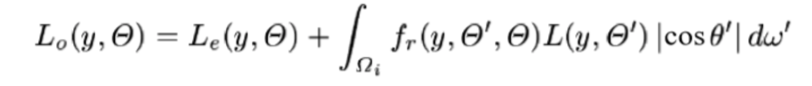
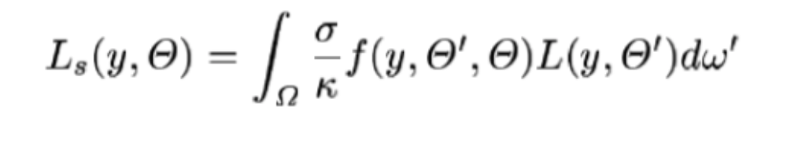

We are implementing volumetric scattering rendering in accordance with the paper provided in the project idea page (i.e. [1]). We chose to extend and modify the codes in project 3, which we consider is a good starting point of our rendering. We have basically implemented the random walk ray tracing introduced in the chapter 3 of paper [1] and substitute the old ray tracing method in project 3 with this new one. After substitution, reflecting and scattering events can be both rendered correctly (hopefully), while only reflecting can be done using old method.
In project 3, we trace a ray recursively by tracing its “bounces” (reflection on surfaces) separately. In final project, “bounces” can not only take places on surfaces but also on atomospheric particles, which is commonly referred “scattering”. Intuitively, scattering can be considerd as something that “prevent the light arriving at the surfaces with a certain probability”.
To implement aforementioned scattering events, some preparetion code were written: (1) DistanceSampler(): this is a sampler that samples a distance value according to a exponentially decreasing probabilistic density function which is introduced in chapter 3 of [1]; (2) Schlick Phase Function: this fucntion estimates scattered outgoing ray spectrum for a scattering events. Intuitively, this function acts silmilarly as brdf function in reflection.
After finishing preparation codes, we have modified ray tracing code in project 3. Speficially, in at_least_one_bounce(), we first sample a travelling distance for the currently traced ray using DistanceSampler(), denoted by d. If d is less than the distance to the nearest surface, we can assume that the ray is “intercepted” before it reaches and surface and is reflected, in this case we set the “interaction” as “scattering”. Otherwise, the ray reaches the surface and is reflected as implemented in project 3, and the “interaction” is set to “reflecting”.
For each ray-environment interaction, we use importance sampling to estimate the direct illumination. For each imcoming light, we multiply the incoming radiance with a cosine term and a brdf term if the interaction is “reflecting”; otherwise (when interaction is “scatteing”), we multiply with a phase function term and some coeffients related to the optic property of medium in the atmosphere. Formally, the formulas are expressed as below:
Direct illuminance estimation for reflecting:
Direct illuminance estimation for scattering:
Important pseudo codes can be viewed in our milestone video/slides.
In summary, at this point we have done:
(1) Designing phase function and a pdf-based sampler for sampling direction of next bounce with inverse method.
(2) Designing a distance sampler according to [1] using inverse method;
(3) Modify the skeleton and functions defined to fit scattering effects into our work.
[1] Eric P. Lafortune and Yves D. Willems, Rendering Participating Media with Bidirectional Path Tracing, 7th Eurographics Workshop on Rendering